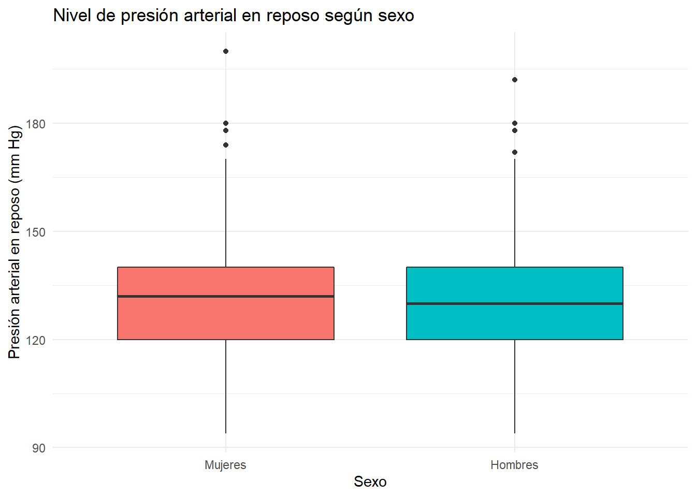

Warning: package 'MVA' was built under R version 4.3.1Warning: package 'HSAUR2' was built under R version 4.3.1Warning: package 'GGally' was built under R version 4.3.1Este es el repositorio, y el data set lo hemos sacado de este link
Warning: package 'MVA' was built under R version 4.3.1Warning: package 'HSAUR2' was built under R version 4.3.1Warning: package 'GGally' was built under R version 4.3.1Antes de empezar con el análisis multivariante, vamos a limpiar el dataset. Primero hemos canviado el nombre de todas las variables, ya que ellas venian con X1,X2, etc, para las que enunciaremos después. A continuación hemos pasado a factor las variables que lo era. Y por último, como teníamos un número pequeño de muestras a las que les faltaban algunos datos, 6, las hemos eliminado. Cabe remarcar que la falta de datos estabe puesta con un interrogante, ‘?’, en vez del típico ‘NA’.
El objetivo del estudio original es detectar la presencia de enferemedades del corazón en un paciente. Hay 297 visualizaciones de 14 variables.
Describamos ahora las variables:
age: Año del paciente, valor entero, con un mínimo de 29 y un máximo de 77 años. La media de edad de los pacientes está en los 54.54 años.
sex: Sexo cromosómico del paciente, variable categórica, toma el valor 0 para el femenino y 1 para el masculino. Encontramos un total de 96 mujeres y 201 hombres.
cp: “Chest Pain” hace referencia al tipo de dolor que se sufre en el pecho, es una variable categórica. Toma los valores 1 para angina de pecho típica, 2 para angina de pecho atípica, 3 para dolores que no son de angina de pecho, 4 asintomático.
restbp: Presión de la sangre en reposo (mm Hg), una variable numérica, con el valor mínimo en 94 y el valor máximo en 200, con valor medio 131.69 mm Hg.
chol: Colesterol en sangre (mg/dl), variable numérica con un mínimo de 126 y un máximo de 564, siendo el nivel medio de colesterol 247.35 mg/dl.
fbs: Booleano que determina si la cantidad de azúcar en sangre en ayuno es mayor a 120mg/dl, toma el valor 0 para negarlo, y 1 para afirmarlo.
restecg: Resultados del electrocardiograma en reposo, una variable categórica, que indica unos resultados normales con un 0, con un 1 indica anomalías en el segmento ST-T (inversiones de las ondas T y/o elevaciones o depresiones de las ondas ST superiores a 0.05mV, y con un 2 indica una alta probabilidad o asegura una hipertrofia ventricular izquierda.
maxHR: Indica el ritmo cardíaco máximo alcanzado, con valor mínimo de 71, y valor máximo de 202. El valor medio de esta variable es 149.60.
exang: Booleano que indica si la angina se ha inducido por el ejercicio, tomando 1 como si, y 0 como no.
expeak: Indica la depresión en el segmento ST inducida por el ejercicio en relación con el reposo. Con valor mínimmo de 0, y valor máximo de 6.20.
slope: Indica la pendiente en la cima del segmento ST de ejercicio. Toma el 0 cuando la pendiente es positiva, 1 cuando la pendiente es nula, y 2 cuando la pendiente es negativa.
mves: Número de vasos principales coloreados por fluoroscopía. Toma valores enteros entre 0 y 3, inclusive.
tHR: Variable categória que indica el tipo de ritmo cardíaco. Toma el valor 3 para el ritmo normal, 6 para defecto reparado, y 7 para defecto reversible.
fdiag: Booleano para el diagnosis de la enfermedad del corazón. Toma el 0 cuando la reducción del diámetro es menor al 50%, y 1 cuando es superior al 50%.
mves: Variable categórica que determina el número de vasos sanguíneos mayores.
Ángel [noche del miércoles al jueves]: voy a ir haciendo gráficos cruzando datos, haré todos los cruces que se me vayan ocurriendo. Luego ya en haber tenido ocasión de charlar los tres podemos decidir cuáles nos parecen más relevantes y cuales no.
Creo que tiene la pega de que el colesterol puede ser que sea algo que dependa más de la edad y no tanto del sexo. La gente mayor tiene a tener más colesterol que la gente joven. Propongo ahora el mismo gráfico pero teniendo en cuenta franjas de edad.


`geom_smooth()` using formula = 'y ~ x'
Mostrar la distribución de las variables numéricas (que son edades, presión arterial, nivel de colesterol y frecuencia cardiaca máxima) para ver cómo están repartidas en nuestro conjunto de datos (si de forma uniforme o no uniforme).


Distribución del nivel de colesterol según el tipo de dolor en el pecho:


Análisis inferencial:
Warning: package 'corrplot' was built under R version 4.3.1corrplot 0.92 loadedMatriz de correlaciones:
Vector de medias de las variables cuantitativas:
Contrastes de correlación:
Confirmamos que en la población grande (no en nuestra muestra) la edad y el número máximo de pulsaciones tienen correlación negativa. Esto significa que, a mayor edad se espera que disminuya el número máximo de pulsaciones por minuto.
Pearson's product-moment correlation
data: heartdisease$maxHR and heartdisease$age
t = -7.3752, df = 295, p-value = 8.351e-13
alternative hypothesis: true correlation is less than 0
95 percent confidence interval:
-1.0000000 -0.3106485
sample estimates:
cor
-0.3945629
Pearson's product-moment correlation
data: heartdisease$maxHR and heartdisease$expeak
t = -6.3681, df = 295, p-value = 3.66e-10
alternative hypothesis: true correlation is less than 0
95 percent confidence interval:
-1.0000000 -0.2606699
sample estimates:
cor
-0.34764 Gráfico para datos bivariantes:
El boxplot bivariante es un gráfico de dispersión que incluye dos elipses estimadas, la interior que contiene aproximadamente el 50% de los datos y la exterior que contiene aproximadamente el 95% de los datos. Este tipo de gráficos nos ayuda a localizar datos atípicos. Veamos un ejemplo con los datos de los pingüinos.

Matrices de dispersión:
`stat_bin()` using `bins = 30`. Pick better value with `binwidth`.
`stat_bin()` using `bins = 30`. Pick better value with `binwidth`.
`stat_bin()` using `bins = 30`. Pick better value with `binwidth`.
`stat_bin()` using `bins = 30`. Pick better value with `binwidth`.
`stat_bin()` using `bins = 30`. Pick better value with `binwidth`.Caras de Chernoff:
age sex cp restbp chol fbs
Min. :29.00 0: 96 1: 23 Min. : 94.0 Min. :126.0 0:254
1st Qu.:48.00 1:201 2: 49 1st Qu.:120.0 1st Qu.:211.0 1: 43
Median :56.00 3: 83 Median :130.0 Median :243.0
Mean :54.54 4:142 Mean :131.7 Mean :247.4
3rd Qu.:61.00 3rd Qu.:140.0 3rd Qu.:276.0
Max. :77.00 Max. :200.0 Max. :564.0
restecg maxHR exang expeak slope mves
0:147 Min. : 71.0 0:200 Min. :0.000 1:139 Min. :0.0000
1: 4 1st Qu.:133.0 1: 97 1st Qu.:0.000 2:137 1st Qu.:0.0000
2:146 Median :153.0 Median :0.800 3: 21 Median :0.0000
Mean :149.6 Mean :1.056 Mean :0.6768
3rd Qu.:166.0 3rd Qu.:1.600 3rd Qu.:1.0000
Max. :202.0 Max. :6.200 Max. :3.0000
tHR fdiag decade
3:164 0:160 [29,39): 10
6: 18 1: 54 [39,49): 70
7:115 2: 35 [49,59):112
3: 35 [59,69): 92
4: 13 [69,79): 13